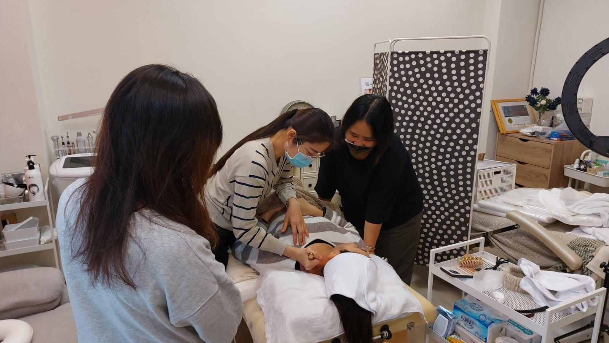

The Bojin Journal · The method
The Supporting Hand: What Your Other Hand Should Be Doing

Watch any bojin video and your eyes go straight to the hand holding the tool. That is the hand doing the visible work, so it gets all the attention, and almost every new student copies only that half of the picture. Then they wonder why their sessions feel less controlled than mine, even with the same tool and the same strokes. The answer is usually sitting in plain sight, resting quietly on their lap: the other hand was never doing anything.
So here is the idea before the detail: your free hand is not a spare. It has three jobs, every single stroke, and a session without them is only half the method. It anchors the skin, it holds the surrounding area steady, and it feels for tenderness before the tool does. Give it those three jobs and the same stroke becomes noticeably more controlled.
Job one: anchoring, so nothing drags
Skin that is not held taut moves with the tool instead of staying put, which is the difference between a stroke that glides and one that tugs. Rest two fingers of your free hand a little ahead of the tool, in the direction the stroke is heading. As the tool travels toward your fingers, the skin between them stays taut the whole way. This single habit is most of what separates a controlled, comfortable stroke from one that drags and stretches skin it shouldn't.
Job two: holding the area steady
Beyond the single anchor point, a light, steady rest of the free hand nearby keeps the whole area from shifting while you work a spot with the tool. This matters most with the rounded tip, where a small point takes concentrated pressure: a steadying hand nearby keeps that pressure precise instead of sliding off target. Think of it as the difference between writing on a steady table and writing on one that wobbles. Same pen, same hand, very different result.
Your two hands are not doing the same job twice. The tool hand applies the technique: the angle, the pressure, the stroke. The supporting hand creates the conditions that let the technique work: taut skin, a steady surface, an early warning system. A skilled stroke with no supporting hand is still only doing half the work available to it.
Job three: feeling for what the tool hasn't reached yet
This is the job most people never think to assign their free hand: reading ahead. Rest your fingertips lightly on skin the tool is about to reach, and you often feel a tight or tender spot a beat before the tool arrives there. That small head start lets you adjust, easing your pressure or your angle before you are already on the spot, rather than reacting after a stroke turns uncomfortable. Your supporting hand becomes an early-warning system for the sensations I've written about elsewhere, catching them a moment sooner.
Practice it on your jaw
Reading about two hands is one thing; feeling the coordination is another. Use a little oil or your usual moisturizer and try this on one side of your jaw.
- Place the supporting hand first Before the tool touches your skin, rest two fingers of your free hand near the ear, ahead of where the tool will travel.
- Bring the tool to meet the anchor Start the broad edge at the chin and glide toward your resting fingers. The skin between the tool and your fingers stays taut the whole way, never bunching or dragging.
- Let the supporting hand lead the next pass Move your fingers a little further along before the next stroke, and let the tool follow. The supporting hand sets the path; the tool completes it.
Notice how different the stroke feels once your fingers are doing something rather than resting in your lap. The tool hand can relax a little, because it isn't the only thing keeping the skin in place anymore.
The common mistake
The free hand drifting away entirely, usually into a lap or a phone, is the most common miss, and it is an easy one to fix simply by remembering the hand exists. A smaller mistake is pressing too hard with the supporting hand itself, which just adds a second point of pressure instead of a steady anchor. It should rest, not push. Light contact, doing its three jobs quietly, while the tool hand does the visible work.
An honest note
Using both hands will not change what a session can ultimately do for your face; it changes how precisely and comfortably it does it. The same gentle, temporary effect holds, and it still builds with consistency. What the supporting hand adds is control you can feel the very first time you remember to use it.
Next time you pick up the stick, look down at your other hand. If it is resting in your lap, that is the one change worth making before anything else.
Quick answers
What should my free hand actually be doing during bojin?
Three jobs: anchoring the skin just ahead of the tool so nothing drags, gently holding the surrounding area steady so the stretch stays where you intend it, and paying attention to what you feel under your fingertips so you notice tenderness before the tool does. It is not just resting there.
Where exactly do I place my supporting hand?
Just ahead of the tool, in the direction the stroke is heading. If you are working the jaw toward the ear, rest your fingers a little further toward the ear than the tool. That way the skin is held taut and supported before the tool ever reaches it.
Is a two-handed technique harder to learn?
It feels awkward for the first few sessions and then becomes automatic, the way typing without looking does. Start by simply resting the free hand near the tool without worrying about perfect placement. The habit of using both hands matters more at first than getting the exact position right.
Can I skip the supporting hand if I'm short on time?
You can, but it is the first place a rushed session starts to slip: skin drags a little more, the pressure feels less controlled, and you lose the early warning a tender spot gives you. If you are short on time, shorten the session rather than dropping the supporting hand.
Watch both hands work together
Reading about the supporting hand only goes so far. My free 3-minute video shows both hands moving together on a real face, so you can copy the coordination, not just the idea.
Watch the free 3-min videoYu-Ting Lan is a Taiwan-based international bojin instructor and the founder of Héhé Studio. She has taught her bojin method to more than a thousand students, from complete beginners to grandmothers, across Taiwan, Hong Kong, and Malaysia.